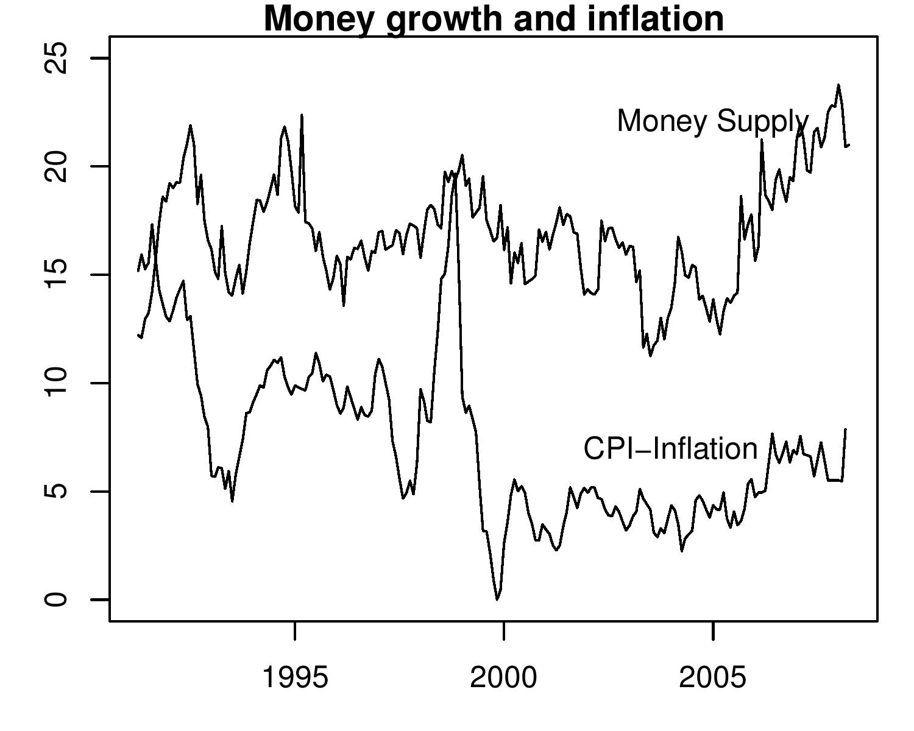

China does not show the way
Indian Express, 15 May 2008
With inflation above 7 and industrial production growing at 3 percent, the Indian economy is in trouble. For many years, we envied China's high growth of GDP and exports and tried to learn from them. Unfortunately, we learned some of the wrong lessons. Especially, in their management of the currency and monetary policy. We failed to see why some of policies that can work in China, cannot work in India. First, the economic structure is different. China has a large share of investment undertaken by former PSEs whose decisions are not based on market principles. In India private firms make investment decisions in a market economy. Second, the political structure is different. The Chinese Communist Party does not have to depend on political funding or votes to remain in power, unlike a ruling party in India. These differences are crucial in making the Chinese policy monetary policy model unsuitable for India.
Various commentators have often repeated how policies that work for China should work for India because both countries are poor and have large labour surplus economies. In managing the currency and prices, the Chinese policy of sterilised intervention was described as the perfect receipe for achieving high exports and low inflation. It was argued that government only needed to allow the RBI to sterilise and the RBI would be able to keep the rupee weak and exports high. When the Chinese central bank, People's Bank of China (PBOC) created bonds meant for sterilisation of its currency intervention, massively sold them to Chinese public sector banks and raised the CRR, RBI followed it.
Today, when Chinese inflation has hit 8.5 percent and the People's Bank of China has raised the Cash Reserve Ratio to 16.5 percent, India is still following. Indian policy makers have not woken up to the fact that this is a disater for India. They completely ignore the fact that public sector enterprises in China can keep investing despite the credit constraints and keep China's investment rate high, but Indian firms that function in a market economy, cannot not do so. Higher cost of capital is pinching industry, and can easily push the economy into another 1996-97 kind of recession when RBI had repeatedly raised CRR to sterilise its intervenion. Policy makers need only to look back at the consequences of monetary policy in India in the 1990s. Instead, they continue looking towards the Chinese model.
Another important difference between India and China (as well as other East Asian economies who followe the Chinese path) that policy makers seem to forget is the difference in the political regimes. Perhaps, in China the government could ignore the impact of its yuan policy on domestic industry and the mass of the population for a long time, even though it could see that its currency policy had costs. The question that the Congress government needs to ask itself is whether it could blindly follow in the footsteps of a single party ruled country. The Congress cannot but turn to industry for political funding, and towards the population for votes, when it seeks re-election. Having pushed industry into a slowdown and voters into high inflation, it will be interesting to watch how the Chinese model will save the Congress.
As the figure shows the RBI has pumped huge amounts of rupees into the economy. Money supply has been growing at rates above 20 percent. This was bound to pull up prices. At the same time the global prices have gone up. This has lead to a big jump in inflation. This was hardly the best policy to follow in a democracy, especially in a pre-election year.
If the Congress continues with the false fight against inflation without a geniune change in its policies, then unlike the Communist Party of China, it can be thrown out of power. It may be very fashionable to follow East Asia and China in high export growth. But unlike India the autocratic governments in these countries did not have to consider domestic policitical constraints as seriously as a ruling party in India needs to.
Back up to Ila Patnaik's media page
Back up to Ila Patnaik's home page